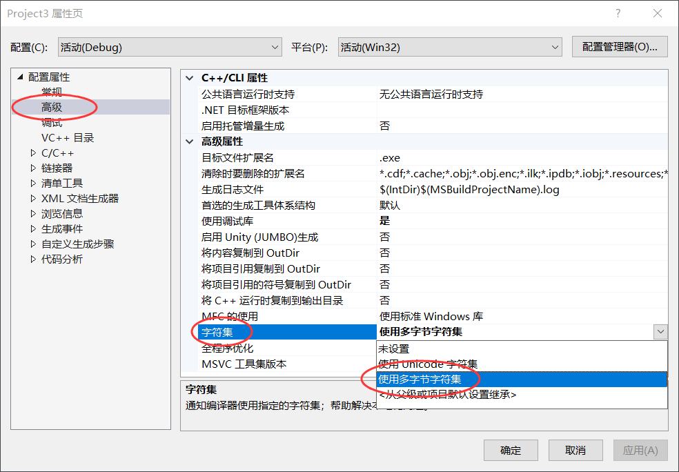

Windows下显式调用动态链接库
通过前面的学习我们知道，任何以动态链接方式生成的可执行文件，执行时都必须将所需要的动态链接库载入内存。
动态链接库载入内存的时机有两种，一种是当可执行文件载入内存时，由动态链接器将所有动态库文件载入内存；另一种是由程序自己控制动态库载入内存的时机，并且可以在不需要的时候将其卸载（释放），这种加载动态库的方式又称运行时加载。
有读者可能会问，两种加载方式所用的动态链接库有什么区别吗？本质上没有任何区别。普通的动态链接库不需要做任何修改就可以进行运行时加载，运行时加载的动态链接库又称为动态加载库。
Windows 平台上，动态链接库的加载、使用、卸载等操作，可以借助以下 3 个函数完成，使用它们时需要在程序中引入 <windows.h> 头文件。
LoadLibrary() 函数可以加载指定的动态库文件，语法格式如下：
GetProcAddress() 函数的语法格式如下：
如果成功找到了指定名称的函数或变量，函数会返回该函数或变量的地址；反之如果查找失败，函数返回 NULL。
注意，同一个动态库文件可以载入多次，每个动态库文件都配置一个初始值为 0 的计数器，调用 LoadLibrary() 函数加载它时，计数器加 1；调用 FreeLibrary() 函数卸载它时，计数器减 1。只有当计数器减至 0 时，动态库才会被真正地卸载掉（取消进程空间和该动态库的映射关系，该链接库的句柄也会失效）。
FreeLibrary() 函数的语法格式如下：
《Windows下动态链接库的创建和使用》一节中，创建好了 myDLL.dll 动态库文件，我们就以此文件为例给大家演示整个显式调用的过程：
执行程序前，要先将 myDLL.dll 文件拷贝到当前项目的目录下。程序的执行结果为：
动态链接库载入内存的时机有两种，一种是当可执行文件载入内存时，由动态链接器将所有动态库文件载入内存；另一种是由程序自己控制动态库载入内存的时机，并且可以在不需要的时候将其卸载（释放），这种加载动态库的方式又称运行时加载。
和第一种载入方式相比，运行时加载方式的特点是：程序边执行边载入所需的动态库文件，而不是一开始就将它们全部载入内存。运行时加载方式可以缩减程序的启动时间，节省程序运行过程中占用的内存空间。此外，采用运行时载入的程序执行时可以重新载入某个动态链接库，整个过程无需重新启动。通常情况下，支持动态链接的系统都支持以“运行时加载”的方式载入动态库。
有读者可能会问，两种加载方式所用的动态链接库有什么区别吗？本质上没有任何区别。普通的动态链接库不需要做任何修改就可以进行运行时加载，运行时加载的动态链接库又称为动态加载库。
Windows 平台上，动态链接库的加载、使用、卸载等操作，可以借助以下 3 个函数完成，使用它们时需要在程序中引入 <windows.h> 头文件。
显式调用动态链接库
1) LoadLibrary()：加载库文件
所谓“加载”库文件，指的是将库文件载入内存，当前程序（进程）可以使用文件内部的资源。LoadLibrary() 函数可以加载指定的动态库文件，语法格式如下：
HMODULE LoadLibrary(LPCTSTR lpFileName);
lpFileName 参数表示被加载的动态链接库的名称（必要时需指明存储路径）。执行成功时，函数会返回一个表示已加载库文件的句柄；反之如果执行失败，函数返回 NULL。2) GetProcAddress()：从库文件中找到要用的资源
对于成功加载的动态库文件，GetProcAddress() 函数可以获取库文件中的指定资源（函数、变量等）。GetProcAddress() 函数的语法格式如下：
FARPROC GetProcAddress(HMODULE hModule, LPCSTR lpFileName);
hModule 参数用于指定动态链接库模块的句柄，即 LoadLibrary() 函数的返回值；lpFileName 参数用于指定要获取的函数或变量的名称。如果成功找到了指定名称的函数或变量，函数会返回该函数或变量的地址；反之如果查找失败，函数返回 NULL。
3) FreeLibrary()：卸载已加载的库文件
FreeLibrary() 函数的功能恰好和 LoadLibrary() 相反，它用于卸载一个已加载的动态库。注意，同一个动态库文件可以载入多次，每个动态库文件都配置一个初始值为 0 的计数器，调用 LoadLibrary() 函数加载它时，计数器加 1；调用 FreeLibrary() 函数卸载它时，计数器减 1。只有当计数器减至 0 时，动态库才会被真正地卸载掉（取消进程空间和该动态库的映射关系，该链接库的句柄也会失效）。
FreeLibrary() 函数的语法格式如下：
BOOL FreeLibrary(HMODULE hLibModule)
如果卸载成功，函数返回一个非零数；反之如果卸载失败，函数返回 0。《Windows下动态链接库的创建和使用》一节中，创建好了 myDLL.dll 动态库文件，我们就以此文件为例给大家演示整个显式调用的过程：
- #include<stdio.h>
- #include<stdlib.h>
- #include<windows.h> // 必须包含 windows.h
- typedef int (*FUNADDR)(); // 指向函数的指针
- int main() {
- int a = 10, b = 5;
- //加载 myDLL.dll 动态库
- HINSTANCE dllDemo = LoadLibrary("myDLL.dll");
- FUNADDR add, sub;
- if (dllDemo) {
- //找到动态库中的 add() 和 sub() 函数
- add = (FUNADDR)GetProcAddress(dllDemo, "add");
- sub = (FUNADDR)GetProcAddress(dllDemo, "sub");
- }
- else {
- printf("Fail to load DLL!\n");
- //获取加载失败的具体原因
- printf("%d\n", GetLastError());
- system("pause");
- exit(1);
- }
- printf("a+b=%d\n", add(a, b));
- printf("a-b=%d\n", sub(a, b));
- //卸载 myDLL.dll 动态库
- FreeLibrary(dllDemo);
- //重新加载 myDLL.dll
- dllDemo = LoadLibrary("myDLL.dll");
- FUNADDR mul, div;
- if (dllDemo) {
- mul = (FUNADDR)GetProcAddress(dllDemo, "mul");
- div = (FUNADDR)GetProcAddress(dllDemo, "div");
- }
- else {
- printf("Fail to load DLL!\n");
- system("pause");
- exit(1);
- }
- printf("a*b=%d\n", mul(a, b));
- printf("a/b=%d\n", div(a, b));
- FreeLibrary(dllDemo);
- system("pause");
- return 0;
- }
a+b=15
a-b=5
a*b=50
a/b=2

图 1 手动修改 VS2019 的项目属性
图 1 手动修改 VS2019 的项目属性
关注微信公众号「站长严长生」，在手机上阅读所有教程，随时随地都能学习。本公众号由C语言中文网站长运营，每日更新，坚持原创，敢说真话，凡事有态度。

微信扫描二维码关注公众号